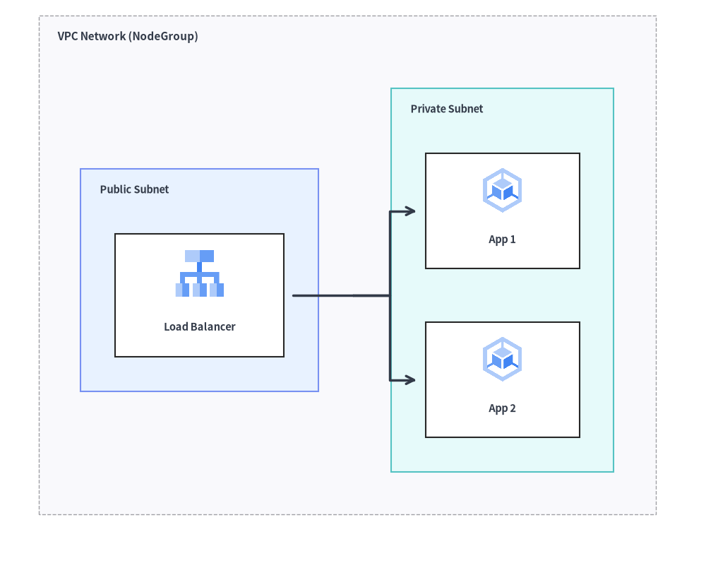
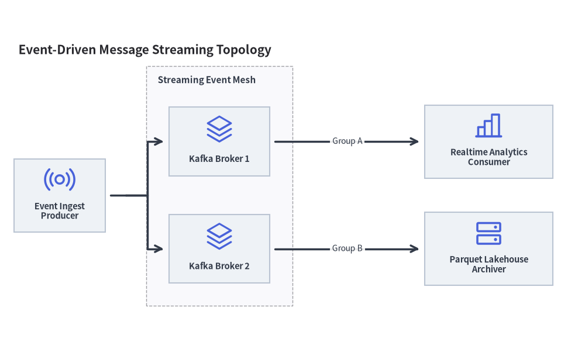

Architecture Diagrams: Cloud Topologies, Microservices & VPC Boundaries
ArchitectureDiagram visualizes distributed systems, cloud networks, microservices topologies, and infrastructure boundaries. It pairs icon-centric nodes with automatic hierarchical boundary boxes (NodeGroup) and multi-way branch routing.

Source Code
from drawlib.canvas import save, setup
from drawlib.diagrams.architecture import ArchitectureDiagram, GcpIcon, Node, NodeGroup
from drawlib.styles import Styles
setup(width=92, height=74)
d = ArchitectureDiagram(
node_style=Styles.Primary,
node_text_style=Styles.DarkBold.patch(text_size=10.5),
edge_style=Styles.DarkBold,
edge_text_style=Styles.Dark.patch(text_size=10.5),
node_card_style=Styles.Neutral,
)
vpc = d.add(
NodeGroup(
title="VPC Network (NodeGroup)",
padding=5.5,
text_style=Styles.DarkBold.patch(text_size=11.0, halign="left", valign="top"),
),
xy=(3.0, 3.0),
)
pub_subnet = vpc.add(
NodeGroup(
title="Public Subnet",
padding=4.5,
style=Styles.PrimaryNeutral,
text_style=Styles.DarkBold.patch(text_size=10.5, halign="left", valign="top"),
),
xy=(5.5, 5.5),
)
lb = pub_subnet.add(
Node("Load Balancer", width=22, height=16, icon=GcpIcon.CLOUD_LOAD_BALANCING, icon_size=7.0, card_style=Styles.White),
xy=(14.5, 24.0),
)
priv_subnet = vpc.add(
NodeGroup(
title="Private Subnet",
padding=4.5,
style=Styles.SecondaryNeutral,
text_style=Styles.DarkBold.patch(text_size=10.5, halign="left", valign="top"),
),
xy=(46.0, 5.5),
)
app1 = priv_subnet.add(
Node("App 1", width=20, height=15, icon=GcpIcon.GOOGLE_KUBERNETES_ENGINE, icon_size=6.5, card_style=Styles.White),
xy=(13.5, 35.0),
)
app2 = priv_subnet.add(
Node("App 2", width=20, height=15, icon=GcpIcon.GOOGLE_KUBERNETES_ENGINE, icon_size=6.5, card_style=Styles.White),
xy=(13.5, 13.0),
)
lb.fork([app1, app2], at_x=43.0, padding=1.2)
d.draw(xy=(3.0, 3.0))
save()
1. Core Concepts & Basic Usage
ArchitectureDiagram places each Node by its card center (cx, cy) while anchoring NodeGroup containers and d.draw(xy) at their Bottom-Left (x0, y0) origin (or diagram midpoint via align="center"). You can nest NodeGroup boundaries with automatic child bounding boxes, attach edges directly to group perimeters, switch between "orthogonal", "direct", "curved", and .via() waypoint routes, and split 1-to-N branches via .fork():

Source Code
from __future__ import annotations
from drawlib.anim import Animation
from drawlib.canvas import save, setup
from drawlib.diagrams.architecture import (
ArchitectureDiagram,
GcpIcon,
Node,
NodeGroup,
PhosphorIcon,
)
from drawlib.icons import code as code_icons
from drawlib.icons import phosphor
from drawlib.lines import line
from drawlib.shapes import circle, rectangle
from drawlib.smartarts import SourceCode, SourceCodeStyles
from drawlib.styles import Styles
from drawlib.text import text
W, H = 138.0, 82.0
setup(width=W, height=H)
anim = Animation(fps=10.0, loop=0)
CODE_TEXT_SIZE = 10.0
PT_TO_CANVAS = W / 720.0
FONT_CANVAS = CODE_TEXT_SIZE * PT_TO_CANVAS
LINE_H = FONT_CANVAS * 1.8
PAD_Y = FONT_CANVAS * 1.2
CODE_STYLES = SourceCodeStyles.get("default", font_lang="en", text_size=CODE_TEXT_SIZE).patch(
box_style=Styles.Neutral.patch(shape_fill_color=(0, 0, 0, 0), shape_line_width=0),
)
PANE_HEADER = Styles.Neutral.patch(
shape_fill_color=(238, 243, 250),
shape_line_color=(203, 213, 225),
shape_line_width=1.2,
shape_r=0.0,
)
EDITOR_BODY = Styles.Neutral.patch(
shape_fill_color=(250, 252, 255),
shape_line_color=(203, 213, 225),
shape_line_width=1.2,
shape_r=0.0,
)
TAKEAWAY_BODY = Styles.Neutral.patch(
shape_fill_color=(242, 246, 253),
shape_line_color=(203, 213, 225),
shape_line_width=1.2,
shape_r=0.0,
)
STUDIO_BODY = Styles.Neutral.patch(
shape_fill_color=(239, 243, 249),
shape_line_color=(203, 213, 225),
shape_line_width=1.2,
shape_r=0.0,
)
PART_ITEMS = [
("1. Anchors & Icons", "Node center & GcpIcon"),
("2. NodeGroup Bounds", "Auto-fit & group edges"),
("3. Edge Routing", "orthogonal, curved & via"),
("4. Fork & Align", "1-to-N bus, show & center"),
]
def draw_step_bar(active_part: int) -> None:
"""Draw top 4-part progress bar (active_part is 1..4)."""
pill_w = 31.0
pill_h = 7.4
gap = 2.0
start_x = 4.0 + pill_w / 2.0
cy = 75.2
for idx, (label, sublabel) in enumerate(PART_ITEMS, start=1):
cx = start_x + (idx - 1) * (pill_w + gap)
if idx > 1:
prev_cx = cx - (pill_w + gap)
line(
(prev_cx + pill_w / 2.0 + 0.2, cy),
(cx - pill_w / 2.0 - 0.2, cy),
style=Styles.PrimaryBold if idx <= active_part else Styles.MutedThin,
)
if idx == active_part:
st = Styles.PrimaryFlat.patch(shape_r=1.4)
tst = Styles.WhiteBold.patch(text_size=10.3)
sub_tst = Styles.White.patch(text_size=9.5)
elif idx < active_part:
st = Styles.PrimaryNeutral.patch(shape_r=1.4, shape_line_width=1.1)
tst = Styles.PrimaryBold.patch(text_size=10.3)
sub_tst = Styles.Primary.patch(text_size=9.5)
else:
st = Styles.Neutral.patch(shape_r=1.4, shape_line_width=1.1)
tst = Styles.MutedBold.patch(text_size=10.3)
sub_tst = Styles.Muted.patch(text_size=9.5)
rectangle((cx, cy), width=pill_w, height=pill_h, style=st)
text((cx, cy + 1.35), label, style=tst)
text((cx, cy - 1.55), sublabel, style=sub_tst)
def draw_left_pane(
active_part: int,
code_lines: list[str],
hl_range: tuple[int, int],
icon_fn: object,
summary_title: str,
summary_line1: str,
summary_line2: str,
) -> None:
"""Draw left Python code editor + bottom concept takeaway card."""
x0, w = 4.0, 63.5
cx = x0 + w / 2.0
top_y = 63.2
header_h = 5.4
editor_h = 43.8
takeaway_h = 15.8
rectangle((cx, top_y + header_h / 2.0), width=w, height=header_h, style=PANE_HEADER)
code_icons.python((x0 + 3.6, top_y + header_h / 2.0), width=3.4, style=Styles.Neutral)
text(
(x0 + 6.5, top_y + header_h / 2.0),
"arch_tour.py",
style=Styles.DarkBold.patch(text_size=10.2, halign="left"),
)
text(
(x0 + w - 2.6, top_y + header_h / 2.0),
f"Part {active_part} / 4",
style=Styles.PrimaryBold.patch(text_size=9.8, halign="right"),
)
rectangle((cx, top_y - editor_h / 2.0), width=w, height=editor_h, style=EDITOR_BODY)
hl_start, hl_end = hl_range
hl_top = top_y - PAD_Y - hl_start * LINE_H
hl_bot = top_y - PAD_Y - (hl_end + 1) * LINE_H
hl_cy = (hl_top + hl_bot) / 2.0
hl_h = hl_top - hl_bot
rectangle(
(cx, hl_cy),
width=w - 0.6,
height=hl_h,
style=Styles.Neutral.patch(shape_fill_color=(229, 239, 255), shape_line_width=0),
)
rectangle(
(x0 + 0.55, hl_cy),
width=0.9,
height=hl_h,
style=Styles.PrimaryFlat.patch(shape_line_width=0),
)
SourceCode.draw(
xy=(x0, top_y),
width=w,
code="\n".join(code_lines),
styles=CODE_STYLES,
code_lang="python",
show_linenum=True,
align="top_left",
)
take_cy = 3.6 + takeaway_h / 2.0
rectangle((cx, take_cy), width=w, height=takeaway_h, style=TAKEAWAY_BODY)
circle(
(x0 + 6.4, take_cy),
radius=3.3,
style=Styles.PrimaryNeutral.patch(shape_line_width=1.2),
)
icon_fn((x0 + 6.4, take_cy), width=3.8, style=Styles.PrimaryBold) # type: ignore[operator]
text(
(x0 + 11.4, take_cy + 3.6),
summary_title,
style=Styles.DarkBold.patch(text_size=10.4, halign="left"),
)
text(
(x0 + 11.4, take_cy - 0.2),
summary_line1,
style=Styles.Dark.patch(text_size=9.7, halign="left"),
)
text(
(x0 + 11.4, take_cy - 3.8),
summary_line2,
style=Styles.PrimaryBold.patch(text_size=9.6, halign="left"),
)
def draw_geometry_studio(param_badge: str, footer_caption: str) -> tuple[float, float]:
"""Draw right geometry lab shell, inner coordinate sheet with subtle grid, and footer."""
x0, w = 70.0, 64.0
cx = x0 + w / 2.0
top_y = 63.2
header_h = 5.4
body_h = 59.6
rectangle((cx, top_y + header_h / 2.0), width=w, height=header_h, style=PANE_HEADER)
phosphor.ruler((x0 + 3.6, top_y + header_h / 2.0), width=3.4, style=Styles.Primary)
text(
(x0 + 6.5, top_y + header_h / 2.0),
"Live Geometry & Guides",
style=Styles.DarkBold.patch(text_size=10.2, halign="left"),
)
text(
(x0 + w - 2.6, top_y + header_h / 2.0),
param_badge,
style=Styles.PrimaryBold.patch(text_size=9.6, halign="right"),
)
rectangle((cx, 3.6 + body_h / 2.0), width=w, height=body_h, style=STUDIO_BODY)
sheet_cx, sheet_cy = cx, 36.2
sheet_w, sheet_h = 54.0, 40.0
sx0, sy0 = sheet_cx - sheet_w / 2.0, sheet_cy - sheet_h / 2.0
rectangle(
(sheet_cx, sheet_cy),
width=sheet_w,
height=sheet_h,
style=Styles.Neutral.patch(
shape_fill_color=(255, 255, 255),
shape_line_color=(180, 194, 214),
shape_line_width=1.2,
),
)
g_st = Styles.MutedThin.patch(line_color=(232, 238, 246), line_width=0.8)
for gx in range(1, 6):
vx = sx0 + gx * (sheet_w / 6.0)
line((vx, sy0), (vx, sy0 + sheet_h), style=g_st)
for gy in range(1, 5):
vy = sy0 + gy * (sheet_h / 5.0)
line((sx0, vy), (sx0 + sheet_w, vy), style=g_st)
rectangle(
(cx, 8.4),
width=59.2,
height=5.2,
style=Styles.Neutral.patch(
shape_fill_color=(255, 255, 255),
shape_line_color=(203, 213, 225),
shape_line_width=1.1,
shape_r=2.4,
),
text=footer_caption,
text_style=Styles.DarkBold.patch(text_size=9.8),
)
return sheet_cx, sheet_cy
def draw_sub_pills(scx: float, labels: list[str], active_idx: int) -> None:
"""Draw 3-step tracker pills near the top of the studio sheet."""
pw, ph, pgap = 16.2, 4.2, 0.9
p_start = scx - (3 * pw + 2 * pgap) / 2.0 + pw / 2.0
for idx, lbl in enumerate(labels):
px = p_start + idx * (pw + pgap)
if idx == active_idx:
pst = Styles.PrimaryFlat.patch(shape_r=1.2)
ptst = Styles.WhiteBold.patch(text_size=9.5)
elif idx < active_idx:
pst = Styles.PrimaryNeutral.patch(shape_r=1.2, shape_line_width=1.0)
ptst = Styles.PrimaryBold.patch(text_size=9.5)
else:
pst = Styles.Neutral.patch(shape_r=1.2, shape_line_width=1.0)
ptst = Styles.Muted.patch(text_size=9.5)
rectangle((px, 52.0), width=pw, height=ph, style=pst, text=lbl, text_style=ptst)
NODE_TXT = Styles.DarkBold.patch(text_size=9.6)
EDGE_TXT = Styles.DarkBold.patch(text_size=9.5)
GRP_TXT = Styles.DarkBold.patch(text_size=9.6, halign="left", valign="top")
# =========================================================================
# Part 1: Anchors & Icons — Node center (cx, cy), draw(xy) & Card Styles
# =========================================================================
PART1_STATES = [
(
"step1",
3.3,
[
"d = ArchitectureDiagram(",
" node_style=Styles.Primary,",
" node_card_style=(",
" Styles.Neutral), ...)",
"gw = d.add(Node(",
' "Gateway", width=15,',
" icon=GcpIcon.CLOUD_RUN),",
" xy=(11, 11)) # card (cx, cy)",
"d.draw(xy=(6, 6)) # bottom-left",
],
(4, 8),
"Node + draw(xy)",
"Step 1: Node at Card Center (cx, cy) vs. draw(xy)",
"1. Card-Centric Node & Origin",
"d.add(Node, xy) places the card center (cx, cy)",
"d.draw(xy) anchors bottom-left + GcpIcon enum",
),
(
"step2",
3.3,
[
"d = ArchitectureDiagram(...)",
"gw = d.add(Node(",
' "Gateway",',
" icon=GcpIcon.CLOUD_RUN),",
" xy=(10, 11))",
"db = d.add(Node(",
' "SQL DB",',
" icon=GcpIcon.CLOUD_SQL),",
" xy=(32, 11))",
'gw.connect(db, label="SQL")',
"d.draw(xy=(6, 6))",
],
(5, 9),
"gw.connect(db)",
"Step 2: Add Second Node & Connect With Edge Label",
"2. Align Centers & Connect",
"Equal Y=11 keeps horizontal arrow straight",
"gw.connect(db, label=...) attaches to card edges",
),
(
"step3",
3.5,
[
"d = ArchitectureDiagram(",
" node_card_style=(",
" Styles.Neutral), ...)",
"usr = d.add(Node(",
' "Client", icon=(',
" PhosphorIcon.USER)), ...)",
"gw = d.add(Node(",
' "Gateway", card_style=(',
" Styles.PrimaryNeutral),",
" ...), xy=(23, 11))",
"usr.connect(gw); gw.connect(db)",
],
(6, 9),
"card_style + Icons",
"Step 3: Focal card_style Override & PhosphorIcon",
"3. Card Styling & 34 Icon Suites",
"node_card_style sets calm Neutral card defaults",
"card_style=Styles.PrimaryNeutral highlights focal",
),
]
for p1_idx, (mode_1, dur, code_1, hl_rng, badge_txt, foot_txt, s_t, s_1, s_2) in enumerate(PART1_STATES):
with anim.frame(duration=dur):
draw_step_bar(1)
draw_left_pane(1, code_1, hl_rng, phosphor.squares_four, s_t, s_1, s_2)
scx, scy = draw_geometry_studio(badge_txt, foot_txt)
draw_sub_pills(scx, ["1 Node + xy", "+ Connect", "Card Styles"], p1_idx)
if mode_1 == "step1":
bx, by, dw, dh = 82.0, 23.0, 41.0, 21.5
d = ArchitectureDiagram(
node_style=Styles.Primary,
node_text_style=NODE_TXT,
edge_style=Styles.DarkBold,
edge_text_style=EDGE_TXT,
node_card_style=Styles.Neutral,
width=dw,
height=dh,
)
gw = d.add(
Node("Gateway", width=15.0, height=11.5, icon=GcpIcon.CLOUD_RUN, icon_size=4.8),
xy=(11.0, 11.0),
)
d.draw(xy=(bx, by))
rectangle(
(bx + dw / 2.0, by + dh / 2.0),
width=dw,
height=dh,
style=Styles.PrimaryDashed.patch(shape_fill_color=(0, 0, 0, 0), shape_line_width=1.0),
)
ncx, ncy = bx + 11.0, by + 11.0
line((ncx - 9.2, ncy), (ncx - 7.5, ncy), style=Styles.DangerBold.patch(line_width=1.4))
line((ncx + 7.5, ncy), (ncx + 9.2, ncy), style=Styles.DangerBold.patch(line_width=1.4))
line((ncx, ncy + 5.75), (ncx, ncy + 7.4), style=Styles.DangerBold.patch(line_width=1.4))
line((ncx, ncy - 7.4), (ncx, ncy - 5.75), style=Styles.DangerBold.patch(line_width=1.4))
text(
(ncx + 9.8, ncy),
"node.xy\n(card center)",
style=Styles.DangerBold.patch(text_size=9.5, halign="left"),
)
line((bx, by), (bx, by + dh + 3.0), arrow_head="->", style=Styles.DangerBold.patch(line_width=1.3))
text((bx - 1.2, by + dh + 2.4), "+Y", style=Styles.DangerBold.patch(text_size=9.5, halign="right"))
line((bx, by), (bx + 9.5, by), arrow_head="->", style=Styles.DangerBold.patch(line_width=1.3))
text((bx + 10.2, by - 0.8), "+X", style=Styles.DangerBold.patch(text_size=9.5, halign="left"))
circle((bx, by), radius=1.1, style=Styles.DangerFlat)
text(
(bx + 1.8, 18.3),
"d.draw(xy) = bottom-left (x0, y0)",
style=Styles.DangerBold.patch(text_size=9.5, halign="left"),
)
elif mode_1 == "step2":
bx, by, dw, dh = 80.5, 22.8, 43.0, 21.5
d = ArchitectureDiagram(
node_style=Styles.Primary,
node_text_style=NODE_TXT,
edge_style=Styles.DarkBold,
edge_text_style=EDGE_TXT,
node_card_style=Styles.Neutral,
width=dw,
height=dh,
)
gw = d.add(
Node("Gateway", width=14.5, height=11.5, icon=GcpIcon.CLOUD_RUN, icon_size=4.8),
xy=(9.5, 11.0),
)
db = d.add(
Node("SQL DB", width=14.5, height=11.5, icon=GcpIcon.CLOUD_SQL, icon_size=4.8),
xy=(33.5, 11.0),
)
gw.connect(db, label="SQL", padding=0.6)
d.draw(xy=(bx, by))
text(
(scx, 18.4),
"equal Y = 11 • auto right-to-left card anchors",
style=Styles.DarkBold.patch(text_size=9.5),
)
else:
bx, by, dw, dh = 78.6, 22.8, 46.8, 21.5
d = ArchitectureDiagram(
node_style=Styles.Primary,
node_text_style=NODE_TXT,
edge_style=Styles.DarkBold,
edge_text_style=EDGE_TXT,
node_card_style=Styles.Neutral,
width=dw,
height=dh,
)
usr = d.add(
Node("Client", width=12.4, height=11.5, icon=PhosphorIcon.USER, icon_size=4.6, card_style=Styles.White),
xy=(6.8, 11.0),
)
gw = d.add(
Node(
"Gateway",
width=13.4,
height=11.5,
icon=GcpIcon.CLOUD_RUN,
icon_size=4.8,
card_style=Styles.PrimaryNeutral,
),
xy=(23.4, 11.0),
)
db = d.add(
Node("SQL DB", width=12.4, height=11.5, icon=GcpIcon.CLOUD_SQL, icon_size=4.6),
xy=(40.0, 11.0),
)
usr.connect(gw, padding=0.5)
gw.connect(db, padding=0.5)
d.draw(xy=(bx, by))
text(
(scx, 18.4),
"White + PrimaryNeutral focal + Neutral default",
style=Styles.PrimaryBold.patch(text_size=9.5),
)
# =========================================================================
# Part 2: NodeGroup Bounds — Auto-fit, Nested Subnets & Group Perimeter
# =========================================================================
PART2_STATES = [
(
"auto_vpc",
3.3,
[
"vpc = d.add(NodeGroup(",
' title="VPC", padding=3.0),',
" xy=(0, 0)) # group origin",
"gw = vpc.add(Node(",
' "Gateway", ...),',
" xy=(10, 8.5))",
"db = vpc.add(Node(",
' "SQL DB", ...),',
" xy=(30, 8.5))",
'gw.connect(db, label="SQL")',
"d.draw(xy=(6, 6))",
],
(0, 2),
"NodeGroup(padding)",
"Auto-Fit Boundary Box Encloses Child Nodes + Padding",
"Automatic Boundary Box (NodeGroup)",
"d.add(NodeGroup, xy) anchors bottom-left (x0, y0)",
"Outer box expands automatically around children",
),
(
"nested",
3.3,
[
"vpc = d.add(NodeGroup(",
' title="VPC", padding=2.2),',
" xy=(0, 0))",
"pub = vpc.add(NodeGroup(",
' title="Public", ...),',
" xy=(2.2, 2.2))",
"priv = vpc.add(NodeGroup(",
' title="Private", ...),',
" xy=(22.4, 2.2))",
'lb = pub.add(Node("LB"), ...)',
"lb.connect(app) # cross-subnet",
],
(3, 8),
"Nested Subnets",
"Nested Sub-Groups Use Local Coordinates Inside VPC",
"Hierarchical Nested Sub-Groups",
"vpc.add(sub, xy) places subnet in local VPC space",
"Edges connect cleanly across nested boundaries",
),
(
"perimeter",
3.5,
[
"client = d.add(Node(",
' "Client", icon=(',
" PhosphorIcon.USER)),",
" xy=(5.2, 9.2))",
"vpc = d.add(NodeGroup(",
' title="VPC", padding=2.2),',
" xy=(21.6, 0.0))",
"# Connect straight to VPC border!",
"client.connect(",
' vpc, label="HTTPS")',
],
(7, 9),
"connect(vpc)",
"Connect Directly to NodeGroup Perimeter Boundary",
"Connectable Group Perimeters",
"NodeGroup implements Connectable like any Node",
"client.connect(vpc) snaps to outer VPC border",
),
]
for p2_idx, (mode_2, dur, code_2, hl_rng, badge_txt, foot_txt, s_t, s_1, s_2) in enumerate(PART2_STATES):
with anim.frame(duration=dur):
draw_step_bar(2)
draw_left_pane(2, code_2, hl_rng, phosphor.bounding_box, s_t, s_1, s_2)
scx, scy = draw_geometry_studio(badge_txt, foot_txt)
draw_sub_pills(scx, ["Auto VPC Box", "Nested Subnets", "Group Perimeter"], p2_idx)
if mode_2 == "auto_vpc":
bx, by = 82.0, 23.4
d = ArchitectureDiagram(
node_style=Styles.Primary,
node_text_style=NODE_TXT,
edge_style=Styles.DarkBold,
edge_text_style=EDGE_TXT,
node_card_style=Styles.White,
)
vpc = d.add(NodeGroup(title="VPC Network", padding=3.0, text_style=GRP_TXT), xy=(0.0, 0.0))
gw = vpc.add(Node("Gateway", width=14.0, height=11.0, icon=GcpIcon.CLOUD_RUN, icon_size=4.6), xy=(10.0, 8.5))
db = vpc.add(Node("SQL DB", width=14.0, height=11.0, icon=GcpIcon.CLOUD_SQL, icon_size=4.6), xy=(30.0, 8.5))
gw.connect(db, label="SQL", padding=0.6)
d.draw(xy=(bx, by))
circle((bx, by), radius=1.05, style=Styles.DangerFlat)
text(
(scx, 18.4),
"vpc.xy = bottom-left • bounds auto-fit + padding=3.0",
style=Styles.DangerBold.patch(text_size=9.5),
)
elif mode_2 == "nested":
bx, by = 81.2, 21.8
d = ArchitectureDiagram(
node_style=Styles.Primary,
node_text_style=NODE_TXT,
edge_style=Styles.DarkBold,
edge_text_style=EDGE_TXT,
node_card_style=Styles.White,
)
vpc = d.add(NodeGroup(title="VPC", padding=2.2, text_style=GRP_TXT), xy=(0.0, 0.0))
pub = vpc.add(
NodeGroup(title="Public", padding=2.0, style=Styles.PrimaryNeutral, text_style=GRP_TXT),
xy=(2.2, 2.2),
)
lb = pub.add(
Node("LB", width=12.4, height=9.6, icon=GcpIcon.CLOUD_LOAD_BALANCING, icon_size=4.5),
xy=(8.2, 6.8),
)
priv = vpc.add(
NodeGroup(title="Private", padding=2.0, style=Styles.SecondaryNeutral, text_style=GRP_TXT),
xy=(22.8, 2.2),
)
app = priv.add(
Node("App", width=12.4, height=9.6, icon=GcpIcon.GOOGLE_KUBERNETES_ENGINE, icon_size=4.5),
xy=(8.2, 6.8),
)
lb.connect(app, padding=0.6)
d.draw(xy=(bx, by))
text(
(scx, 18.4),
"Public & Private subnets nested inside VPC",
style=Styles.PrimaryBold.patch(text_size=9.5),
)
else:
bx, by = 77.2, 24.0
d = ArchitectureDiagram(
node_style=Styles.Primary,
node_text_style=NODE_TXT,
edge_style=Styles.DarkBold,
edge_text_style=EDGE_TXT,
node_card_style=Styles.White,
)
client = d.add(
Node("Client", width=10.4, height=10.0, icon=PhosphorIcon.USER, icon_size=4.4, card_style=Styles.Neutral),
xy=(5.2, 9.2),
)
vpc = d.add(
NodeGroup(title="VPC", padding=2.2, style=Styles.PrimaryNeutral, text_style=GRP_TXT),
xy=(21.6, 0.0),
)
gw = vpc.add(Node("API", width=10.4, height=9.8, icon=GcpIcon.CLOUD_RUN, icon_size=4.4), xy=(7.4, 7.1))
db = vpc.add(Node("DB", width=10.4, height=9.8, icon=GcpIcon.CLOUD_SQL, icon_size=4.4), xy=(20.2, 7.1))
gw.connect(db, padding=0.5)
client.connect(vpc, label="HTTPS", padding=0.5)
d.draw(xy=(bx, by))
circle((bx + 21.6, by + 9.2), radius=1.0, style=Styles.DangerFlat)
text(
(scx, 18.4),
"client.connect(vpc) attaches to VPC left border",
style=Styles.DangerBold.patch(text_size=9.5),
)
# =========================================================================
# Part 3: Edge Routing — orthogonal, curved/direct & .via() Waypoints
# =========================================================================
PART3_STATES = [
(
"ortho",
3.3,
[
'gw = d.add(Node("Gateway"),',
" xy=(7, 12.5))",
'api = d.add(Node("API"),',
" xy=(37, 19.5))",
'cache = d.add(Node("Cache"),',
" xy=(37, 5.5))",
"gw.connect(api,",
' label="gRPC",',
' routing="orthogonal")',
"gw.connect(cache,",
' label="Sync", arrow="<->")',
],
(6, 10),
'arrow="<->"',
'routing="orthogonal": Right-Angle Z-Bends & "<->"',
"Orthogonal Bends & Arrows",
"Default routing='orthogonal' builds 90-deg turns",
'arrow supports "->", "<-", "<->", and "-" bus',
),
(
"curved_direct",
3.3,
[
'gw = d.add(Node("Gateway"),',
" xy=(7, 12.5))",
'api = d.add(Node("API"),',
" xy=(37, 19.5))",
'cdn = d.add(Node("CDN"),',
" xy=(37, 5.5))",
"gw.connect(api,",
' label="direct",',
' routing="direct")',
"gw.connect(cdn,",
' routing="curved")',
],
(6, 10),
"curved & direct",
'routing="direct" & routing="curved" Tier Spans',
"Direct & Curved Edge Modes",
"Switch per-edge routing without moving nodes",
"Connects card side anchors across offset tiers",
),
(
"via",
3.5,
[
'gw = d.add(Node("Gateway"),',
" xy=(7, 7.5))",
'fw = d.add(Node("Blocked"),',
" xy=(22, 7.5))",
'db = d.add(Node("SQL DB"),',
" xy=(37, 7.5))",
"# Route cleanly above obstacle!",
"gw.connect(",
' db, label="Bypass"',
").via((14.5, 18), (29.5, 18))",
],
(6, 9),
".via(waypoints)",
".via((wx, wy), ...): Explicit Obstacle Detour",
"Explicit Waypoint Detours (.via)",
"Chain .via((x1, y1), (x2, y2)) onto any Edge",
"Routes cleanly around intermediate obstacle cards",
),
]
for p3_idx, (mode_3, dur, code_3, hl_rng, badge_txt, foot_txt, s_t, s_1, s_2) in enumerate(PART3_STATES):
with anim.frame(duration=dur):
draw_step_bar(3)
draw_left_pane(3, code_3, hl_rng, phosphor.path, s_t, s_1, s_2)
scx, scy = draw_geometry_studio(badge_txt, foot_txt)
draw_sub_pills(scx, ["orthogonal", "curved & direct", ".via() Bypass"], p3_idx)
if mode_3 == "ortho":
bx, by = 80.0, 21.8
d = ArchitectureDiagram(
node_style=Styles.Primary,
node_text_style=NODE_TXT,
edge_style=Styles.DarkBold,
edge_text_style=EDGE_TXT,
node_card_style=Styles.Neutral,
)
gw = d.add(Node("Gateway", width=13.0, height=10.2, icon=GcpIcon.CLOUD_RUN, icon_size=4.5), xy=(7.0, 12.2))
api = d.add(
Node(
"API",
width=13.0,
height=10.2,
icon=GcpIcon.GOOGLE_KUBERNETES_ENGINE,
icon_size=4.5,
card_style=Styles.PrimaryNeutral,
),
xy=(37.0, 19.2),
)
cache = d.add(
Node("Cache", width=13.0, height=10.2, icon=PhosphorIcon.DATABASE, icon_size=4.5),
xy=(37.0, 5.2),
)
gw.connect(api, label="gRPC", routing="orthogonal", padding=0.6)
gw.connect(cache, label="Sync", arrow="<->", routing="orthogonal", padding=0.6)
d.draw(xy=(bx, by))
text(
(scx, 18.3),
'90-deg orthogonal turns • bidirectional arrow="<->"',
style=Styles.DarkBold.patch(text_size=9.5),
)
elif mode_3 == "curved_direct":
bx, by = 80.0, 21.8
d = ArchitectureDiagram(
node_style=Styles.Primary,
node_text_style=NODE_TXT,
edge_style=Styles.DarkBold,
edge_text_style=EDGE_TXT,
node_card_style=Styles.Neutral,
)
gw = d.add(Node("Gateway", width=13.0, height=10.2, icon=GcpIcon.CLOUD_RUN, icon_size=4.5), xy=(7.0, 12.2))
api = d.add(
Node(
"API",
width=13.0,
height=10.2,
icon=GcpIcon.GOOGLE_KUBERNETES_ENGINE,
icon_size=4.5,
card_style=Styles.PrimaryNeutral,
),
xy=(37.0, 19.2),
)
cdn = d.add(
Node("CDN", width=13.0, height=10.2, icon=GcpIcon.CLOUD_LOAD_BALANCING, icon_size=4.5),
xy=(37.0, 5.2),
)
gw.connect(api, label="direct", routing="direct", padding=0.6)
gw.connect(cdn, label="curved", routing="curved", style=Styles.PrimaryBold, padding=0.6)
d.draw(xy=(bx, by))
text(
(scx, 18.3),
'point-to-point tier spans ("direct" & "curved")',
style=Styles.PrimaryBold.patch(text_size=9.5),
)
else:
bx, by = 80.0, 23.0
d = ArchitectureDiagram(
node_style=Styles.Primary,
node_text_style=NODE_TXT,
edge_style=Styles.PrimaryBold,
edge_text_style=Styles.PrimaryBold.patch(text_size=9.5),
node_card_style=Styles.Neutral,
)
gw = d.add(Node("Gateway", width=12.6, height=10.2, icon=GcpIcon.CLOUD_RUN, icon_size=4.5), xy=(7.0, 7.5))
fw = d.add(
Node(
"Blocked",
width=12.4,
height=10.2,
icon=PhosphorIcon.SHIELD_WARNING,
icon_size=4.5,
card_style=Styles.SecondaryNeutral,
),
xy=(22.0, 7.5),
)
db = d.add(
Node(
"SQL DB",
width=12.6,
height=10.2,
icon=GcpIcon.CLOUD_SQL,
icon_size=4.5,
card_style=Styles.PrimaryNeutral,
),
xy=(37.0, 7.5),
)
gw.connect(db, label="Bypass", padding=0.5).via((14.5, 18.0), (29.5, 18.0))
d.draw(xy=(bx, by))
circle((bx + 14.5, by + 18.0), radius=0.95, style=Styles.DangerFlat)
circle((bx + 29.5, by + 18.0), radius=0.95, style=Styles.DangerFlat)
text(
(scx, 18.3),
"red dots = .via((14.5, 18), (29.5, 18)) waypoints",
style=Styles.DangerBold.patch(text_size=9.5),
)
# =========================================================================
# Part 4: Fork & Align — 1-to-N Bus, show=False & align="center" + scale
# =========================================================================
PART4_STATES = [
(
"fork",
3.3,
[
'lb = d.add(Node("LB"),',
" xy=(7.5, 12.2))",
'app1 = d.add(Node("App 1"),',
" xy=(35.5, 19.0))",
'app2 = d.add(Node("App 2"),',
" xy=(35.5, 5.4))",
"# 1-to-N shared intermediate bus",
"lb.fork(",
" [app1, app2], at_x=21.5)",
"d.draw(xy=(6, 6))",
],
(6, 8),
"lb.fork(at_x)",
"lb.fork([app1, app2], at_x): 1-to-N Shared Bus",
"1-to-N Bus Fan-Out (.fork)",
"Creates an automatic Junction trunk at at_x",
"Splits cleanly to N targets without messy overlaps",
),
(
"hide",
3.3,
[
'lb = d.add(Node("LB"), ...)',
'app1 = d.add(Node("App 1"), ...)',
'app2 = d.add(Node("App 2"), ...)',
"lb.fork(",
" [app1, app2], at_x=21.5)",
"",
"# Hide node + its fork branch!",
"app2.show = False",
"d.draw(xy=(6, 6))",
],
(6, 7),
"app2.show = False",
"app2.show=False: Auto-Hides Branch, Locks Layout",
"Layout-Stable Visibility (.show)",
"Hides app2 and its incident fork branch segment",
"lb and app1 coordinates stay locked for animations",
),
(
"center",
3.5,
[
"d = ArchitectureDiagram(",
" width=42, height=24, ...)",
'lb = d.add(Node("LB"), ...)',
'app1 = d.add(Node("App 1"), ...)',
'app2 = d.add(Node("App 2"), ...)',
"lb.fork([app1, app2], at_x=17.5)",
"",
"# Center diagram with scale=0.9",
"d.draw(",
' xy=(34, 24), align="center",',
" scale=0.9)",
],
(7, 10),
'align="center"',
'align="center", scale=0.9: Centered & Scaled Draw',
"Centered Placement & Scale",
'align="center" pins diagram midpoint on xy',
"scale=0.9 proportionally resizes cards & arrows",
),
]
for p4_idx, (mode_4, dur, code_4, hl_rng, badge_txt, foot_txt, s_t, s_1, s_2) in enumerate(PART4_STATES):
with anim.frame(duration=dur):
draw_step_bar(4)
draw_left_pane(4, code_4, hl_rng, phosphor.git_fork, s_t, s_1, s_2)
scx, scy = draw_geometry_studio(badge_txt, foot_txt)
draw_sub_pills(scx, ["lb.fork(at_x)", "app2.show=False", 'align="center"'], p4_idx)
if mode_4 in ("fork", "hide"):
bx, by = 80.5, 22.0
d = ArchitectureDiagram(
node_style=Styles.Primary,
node_text_style=NODE_TXT,
edge_style=Styles.DarkBold,
edge_text_style=EDGE_TXT,
node_card_style=Styles.Neutral,
)
lb = d.add(
Node(
"LB",
width=13.0,
height=10.2,
icon=GcpIcon.CLOUD_LOAD_BALANCING,
icon_size=4.5,
card_style=Styles.PrimaryNeutral,
),
xy=(7.5, 12.2),
)
app1 = d.add(
Node("App 1", width=13.4, height=10.0, icon=GcpIcon.GOOGLE_KUBERNETES_ENGINE, icon_size=4.5),
xy=(35.5, 19.0),
)
app2 = d.add(
Node("App 2", width=13.4, height=10.0, icon=GcpIcon.GOOGLE_KUBERNETES_ENGINE, icon_size=4.5),
xy=(35.5, 5.4),
)
lb.fork([app1, app2], at_x=21.5, padding=0.6)
if mode_4 == "hide":
app2.show = False
d.draw(xy=(bx, by))
if mode_4 == "fork":
circle((bx + 21.5, by + 12.2), radius=1.0, style=Styles.PrimaryFlat)
text(
(scx, 18.3),
"shared bus junction at at_x = 21.5",
style=Styles.PrimaryBold.patch(text_size=9.5),
)
else:
rectangle(
(bx + 35.5, by + 5.4),
width=13.4,
height=10.0,
style=Styles.MutedDashed.patch(shape_fill_color=(0, 0, 0, 0), shape_line_width=1.0),
text="hidden",
text_style=Styles.Muted.patch(text_size=9.5),
)
text(
(scx, 18.3),
"app2 + lower branch auto-hide • lb & app1 stay fixed",
style=Styles.PrimaryBold.patch(text_size=9.5),
)
else:
cx_a, cy_a = scx, 33.8
dw, dh, sc = 42.0, 24.0, 0.9
d = ArchitectureDiagram(
node_style=Styles.Primary,
node_text_style=Styles.DarkBold.patch(text_size=10.6),
edge_style=Styles.DarkBold,
edge_text_style=Styles.DarkBold.patch(text_size=10.6),
node_card_style=Styles.Neutral,
width=dw,
height=dh,
)
lb = d.add(
Node(
"LB",
width=12.6,
height=9.6,
icon=GcpIcon.CLOUD_LOAD_BALANCING,
icon_size=4.4,
card_style=Styles.PrimaryNeutral,
),
xy=(7.5, 15.2),
)
app1 = d.add(
Node("App 1", width=13.0, height=9.6, icon=GcpIcon.GOOGLE_KUBERNETES_ENGINE, icon_size=4.4),
xy=(34.5, 18.4),
)
app2 = d.add(
Node("App 2", width=13.0, height=9.6, icon=GcpIcon.GOOGLE_KUBERNETES_ENGINE, icon_size=4.4),
xy=(34.5, 5.6),
)
lb.fork([app1, app2], at_x=17.5, padding=0.6)
d.draw(xy=(cx_a, cy_a), align="center", scale=sc)
vw, vh = dw * sc, dh * sc
rectangle(
(cx_a, cy_a),
width=vw,
height=vh,
style=Styles.PrimaryDashed.patch(shape_fill_color=(0, 0, 0, 0), shape_line_width=1.2),
)
line((cx_a - vw / 2.0 - 2.6, cy_a), (cx_a - vw / 2.0, cy_a), style=Styles.DangerBold.patch(line_width=1.4))
line((cx_a + vw / 2.0, cy_a), (cx_a + vw / 2.0 + 2.6, cy_a), style=Styles.DangerBold.patch(line_width=1.4))
line((cx_a, cy_a + vh / 2.0), (cx_a, cy_a + vh / 2.0 + 2.4), style=Styles.DangerBold.patch(line_width=1.4))
line((cx_a, cy_a - vh / 2.0 - 2.4), (cx_a, cy_a - vh / 2.0), style=Styles.DangerBold.patch(line_width=1.4))
circle(
(cx_a, cy_a),
radius=1.5,
style=Styles.Neutral.patch(shape_fill_color=(255, 255, 255), shape_line_width=0),
)
circle((cx_a, cy_a), radius=1.1, style=Styles.DangerFlat)
text(
(cx_a, 18.4),
'xy = (cx, cy) • align="center", scale=0.9',
style=Styles.DangerBold.patch(text_size=9.5),
)
save()
- Card-Centric
Nodevs. Bottom-LeftNodeGroup/draw(xy):d.add(Node, xy)places the card center(cx, cy)with any of 34 built-in*Iconenums (GcpIcon,AwsIcon,AzureIcon,PhosphorIcon, etc.), whereasNodeGroupandd.draw(xy)anchor at their bottom-left(x0, y0)origin. - Hierarchical
NodeGroupAuto-Bounding & Perimeter Edges: NestedNodeGroupcontainers automatically expand around child nodes and sub-groups with configurablepadding, and accept direct perimeter connections (client.connect(vpc)). - Flexible
EdgeRouting &.via()Waypoints: Switch per-edgeroutingbetween"orthogonal"right-angle bends,"direct"spans, and"curved"paths (arrow="->" | "<-" | "<->" | "-"), or chain.via((wx, wy), ...)to detour cleanly around obstacles. - 1-to-N
.fork(),.showAuto-Hiding & Centered Scaling: Split shared trunks withnode.fork(targets, at_x=..., at_y=...), togglenode.show = Falseto auto-hide connected branches without shifting layout, or center and resize viad.draw(xy, align="center", scale=...).
2. Constructor & Core Classes
from drawlib.diagrams.architecture import ArchitectureDiagram, GcpIcon, Node, NodeGroup, PhosphorIcon
from drawlib.styles import Styles
d = ArchitectureDiagram(
node_style=Styles.Primary,
node_text_style=Styles.DarkBold,
edge_style=Styles.DarkBold,
edge_text_style=Styles.Dark,
node_card_style=Styles.Neutral,
title="Production Multi-Tier Cloud VPC",
)
Parameter Reference
ArchitectureDiagram Class
| Parameter | Type | Default | Description |
|---|---|---|---|
node_style |
Style |
(Required) | Default style for node icons and images. |
node_text_style |
Style |
(Required) | Default style for node text labels. |
edge_style |
Style |
(Required) | Default style for connection lines and arrowheads. |
edge_text_style |
Style |
(Required) | Default style for connection text labels. |
node_card_style |
Style | None |
None |
Default style for node card backgrounds (transparent if None). |
title |
str |
"" |
Optional banner title for the diagram. |
title_style |
Style | None |
None |
Optional style for diagram title. |
width |
float | None |
None |
Explicit diagram canvas width, or None for auto-fit. |
height |
float | None |
None |
Explicit diagram canvas height, or None for auto-fit. |
style |
Style | None |
None |
Overall diagram background and border style. |
Node Class & CustomIcon
| Parameter | Type | Default | Description |
|---|---|---|---|
text |
str |
"" |
Node label text (supports \n). |
width |
float |
20.0 |
Card bounding box width in canvas units. |
height |
float |
16.0 |
Card bounding box height in canvas units. |
icon |
IconType |
None |
Any of the 34 *Icon Enums (PhosphorIcon, GcpIcon, AwsIcon, AzureIcon, AiIcon..OriginalWorkspaceIcon), icon callable (gcp.cloud_run, ai.claude), CustomIcon, Dimage, PIL.Image, or path. |
icon_size |
float |
8.0 |
Outer width and height of the icon/image. |
style |
Style | None |
None |
Optional style override for the icon or image. |
text_style |
Style | None |
None |
Optional style override for the label text (supports xy_shift, angle). |
card_style |
Style | None |
None |
Optional style override for the node card background/border (transparent if None and node_card_style is None). |
show |
bool |
True |
Visibility flag (connected edges auto-hide when False). |
- 34 Built-In Icon Enums (
drawlib.diagrams.architecture): All 34 icon modules expose a 1-to-1StrEnumindrawlib.diagrams.architecture(anddrawlib.diagrams.sequence):- Vector & Cloud Providers:
PhosphorIcon(1,512),GcpIcon(250),AwsIcon(329),AzureIcon(250) - 15 Official Brand Enums:
AiIcon(60),BusinessIcon(48),ClientIcon(60),CloudIcon(45),CnativeIcon(73),CodeIcon(97),DataIcon(70),DevopsIcon(58),FacilityIcon(49),ItserviceIcon(44),NetworkIcon(70),SecurityIcon(74),ServerIcon(82),SocialIcon(50),WorkspaceIcon(40) - 15 Original 2D Pastel Enums:
OriginalAiIcon(80),OriginalBusinessIcon(76),OriginalClientIcon(92),OriginalCloudIcon(147),OriginalCnativeIcon(73),OriginalCodeIcon(121),OriginalDataIcon(86),OriginalDevopsIcon(78),OriginalFacilityIcon(86),OriginalItserviceIcon(64),OriginalNetworkIcon(70),OriginalSecurityIcon(103),OriginalServerIcon(80),OriginalSocialIcon(66),OriginalWorkspaceIcon(57) - See Icons Overview for full catalogs.
- Vector & Cloud Providers:
CustomIcon(image: str | Path | Dimage | Image | CustomIcon): Wraps a custom raster image path,Dimage, orPIL.Imagefor reuse across nodes (exposes.dimageand.copy()).- Node Geometry Queries:
node.xy,node.center,node.left,node.right,node.top,node.bottom,node.get_bounds() -> tuple[float, float, float, float],node.get_size() -> tuple[float, float], andnode.get_absolute_xy() -> tuple[float, float].
NodeGroup Class
| Parameter | Type | Default | Description |
|---|---|---|---|
title |
str |
"" |
Group banner title (e.g. "VPC Network (10.0.0.0/16)"). |
width |
float | None |
None |
Optional fixed width. If None, auto-computed from enclosed items + padding. |
height |
float | None |
None |
Optional fixed height. If None, auto-computed from enclosed items + padding. |
padding |
float |
5.0 |
Inner margin around enclosed child nodes when auto-calculating bounds. |
style |
Style | None |
None |
Style for group background fill and boundary border. |
text_style |
Style | None |
None |
Style for the group header title text. |
show |
bool |
True |
Visibility flag (hides group box, child nodes, and connected edges when False, while preserving outer auto-bounds). |
- Boundary Properties & Methods:
group.xy: Local(x, y)bottom-left origin of the group.group.left,group.right,group.top,group.bottom,group.center: Perimeter anchor and center(x, y)coordinates.group.get_bounds() -> tuple[float, float, float, float]: Returns local(min_x, min_y, max_x, max_y).group.get_size() -> tuple[float, float]: Returns(width, height)of the group box.group.connect(target, label="", arrow="->", routing="orthogonal", style=None, padding=0.0, show=True) -> Edge: Connects the group's outer boundary directly to anotherNode,NodeGroup, orJunction.
Edge & Junction API Reference
Edge Constructor & Methods
Edge(
start: Connectable,
end: Connectable,
label: str = "",
arrow: Literal["->", "<-", "<->", "-"] = "->",
routing: Literal["orthogonal", "direct", "curved"] = "orthogonal",
style: Style | None = None,
text_style: Style | None = None,
padding: float | tuple[float, float] = 0.0,
show: bool = True,
)
- Waypoint Routing Methods:
edge.points(waypoints: list[tuple[float, float]]) -> Edge: Sets explicit intermediate(x, y)waypoints relative to the diagram and returnsselffor chaining.edge.via(*waypoints: tuple[float, float]) -> Edge: Unpacked variadic shorthand for.points(list(waypoints))(e.g.,d.connect(a, b).via((40, 20), (40, 50))).edge.add_point(xy: tuple[float, float]) -> Junction: Appendsxyas an intermediate waypoint onedgeand returns a registeredJunctionatxyfor branching downstream lines.
- Label & Appearance Mutators:
edge.set_label(text: str, pos: float = 0.5) -> Edge: Sets the edge label and its fractional position along the path (0.0= start,0.5= midpoint,1.0= end).edge.set_arrow(arrow) -> Edge,edge.set_style(style) -> Edge,edge.set_text_style(text_style) -> Edge,edge.set_padding(padding) -> Edge.
Registration, Junction, fork(), and Sizing Methods
d.add(item, xy=(x, y), *, show: bool | None = None) -> Node | NodeGroup | Junction(alsogroup.add(...)): Places aNodeat center(x, y)or aNodeGroupat bottom-left(x, y).d.junction(xy: tuple[float, float], *, show: bool = True) -> Junction: Creates and registers a zero-size connectableJunction(xy, *, show=True)atxy(exposesj.connect(...),.xy,.center,.top,.bottom,.left,.right).d.connect(start, end, label="", arrow="->", routing="orthogonal", style=None, text_style=None, padding=0.0, show=True) -> Edge(alsonode.connect(...),group.connect(...),junction.connect(...), andd.add_edge(edge, *, show=None) -> Edge).node.fork(targets: list[Connectable], at_x: float | None = None, at_y: float | None = None, style: Style | None = None, padding: float | tuple[float, float] = 0.0, show: bool = True) -> list[Edge]: Branches fromnodeto multiple targets through an automatically created intermediateJunctionat(at_x, at_y).d.get_size() -> tuple[float, float]: Returns the overall(width, height)of the diagram.d.draw(xy=(0.0, 0.0), *, scale: float = 1.0) -> None: Renders the diagram anchored at bottom-leftxy, scaled proportionally byscale.
3. Production Cloud VPC Architecture
The following complete example demonstrates public and private subnets, load balancing, GKE pods, Cloud SQL, and external users:
from drawlib.canvas import save, setup
from drawlib.diagrams.architecture import ArchitectureDiagram, GcpIcon, Node, NodeGroup, PhosphorIcon
from drawlib.styles import Styles
setup(width=132, height=88)
d = ArchitectureDiagram(
node_style=Styles.Primary,
node_text_style=Styles.DarkBold.patch(text_size=10.0),
edge_style=Styles.DarkBold,
edge_text_style=Styles.Dark.patch(text_size=10.0),
node_card_style=Styles.Neutral,
title="Production Multi-Tier Cloud VPC",
)
# 1. Outer VPC Network Boundary
vpc = d.add(
NodeGroup(
title="VPC Network (10.0.0.0/16)",
padding=5.5,
text_style=Styles.DarkBold.patch(text_size=11.0, halign="left", valign="top"),
),
xy=(28.0, 6.0),
)
# 2. Public Subnet with Load Balancer (local coordinates inside vpc)
public_subnet = vpc.add(
NodeGroup(
title="Public Subnet",
padding=4.0,
text_style=Styles.DarkBold.patch(text_size=10.0, halign="left", valign="top"),
),
xy=(4.5, 4.5),
)
lb = public_subnet.add(
Node("Cloud Load\nBalancer", width=20, height=16, icon=GcpIcon.CLOUD_LOAD_BALANCING, icon_size=6.5),
xy=(12.5, 25.0),
)
# 3. Private Subnet with Application Pods (local coordinates inside vpc)
private_subnet = vpc.add(
NodeGroup(
title="Private Subnet",
padding=4.0,
text_style=Styles.DarkBold.patch(text_size=10.0, halign="left", valign="top"),
),
xy=(36.5, 4.5),
)
gke1 = private_subnet.add(
Node("API Pod 1", width=18, height=15, icon=GcpIcon.GOOGLE_KUBERNETES_ENGINE, icon_size=6.5),
xy=(11.5, 37.0),
)
gke2 = private_subnet.add(
Node("API Pod 2", width=18, height=15, icon=GcpIcon.GOOGLE_KUBERNETES_ENGINE, icon_size=6.5),
xy=(11.5, 13.0),
)
# 4. External Actor and Managed Services (global diagram coordinates outside vpc)
user = d.add(Node("Client User", width=18, height=15, icon=PhosphorIcon.USER, icon_size=6.5), xy=(9.0, 35.5))
db = d.add(Node("Cloud SQL\n(PostgreSQL)", width=22, height=16, icon=GcpIcon.CLOUD_SQL, icon_size=6.5), xy=(114.0, 47.5))
storage = d.add(Node("Cloud Storage\n(Assets)", width=22, height=16, icon=GcpIcon.CLOUD_STORAGE, icon_size=6.5), xy=(114.0, 23.5))
# 5. Connections
d.connect(user, lb, label="HTTPS", padding=1.2)
lb.fork([gke1, gke2], at_x=60.5, padding=1.2)
d.connect(gke1, db, label="SQL", padding=1.2)
d.connect(gke2, storage, label="Assets", padding=1.2)
d.draw(xy=(3.0, 3.0))
save()

4. Event-Driven Streaming Mesh
You can also use general architecture icons from PhosphorIcon to model messaging queues, Kafka clusters, and analytics engines:
from drawlib.canvas import save, setup
from drawlib.diagrams.architecture import ArchitectureDiagram, Node, NodeGroup, PhosphorIcon
from drawlib.styles import Styles
setup(width=128, height=78)
d = ArchitectureDiagram(
node_style=Styles.Primary,
node_text_style=Styles.DarkBold.patch(text_size=10.5),
edge_style=Styles.DarkBold,
edge_text_style=Styles.Dark.patch(text_size=10.0),
node_card_style=Styles.Neutral,
title="Event-Driven Message Streaming Topology",
)
cluster = d.add(
NodeGroup(
title="Streaming Event Mesh",
padding=5.0,
text_style=Styles.DarkBold.patch(text_size=11.0, halign="left", valign="top"),
),
xy=(29.0, 8.0),
)
broker1 = cluster.add(Node("Kafka Broker 1", width=22, height=15, icon=PhosphorIcon.STACK, icon_size=6.5), xy=(16.0, 36.0))
broker2 = cluster.add(Node("Kafka Broker 2", width=22, height=15, icon=PhosphorIcon.STACK, icon_size=6.5), xy=(16.0, 12.5))
pub = d.add(Node("Event Ingest\nProducer", width=20, height=16, icon=PhosphorIcon.BROADCAST, icon_size=7.0), xy=(10.0, 32.2))
analytics = d.add(
Node("Realtime Analytics\nConsumer", width=28, height=16, icon=PhosphorIcon.CHART_BAR, icon_size=7.0),
xy=(104.0, 44.0),
)
archiver = d.add(
Node("Parquet Lakehouse\nArchiver", width=28, height=16, icon=PhosphorIcon.HARD_DRIVES, icon_size=7.0),
xy=(104.0, 20.5),
)
pub.fork([broker1, broker2], at_x=24.5, padding=1.2)
d.connect(broker1, analytics, label="Group A", padding=1.2)
d.connect(broker2, archiver, label="Group B", padding=1.2)
d.draw(xy=(3.0, 3.0))
save()

5. Best Practices & Guidelines
- Align Node Centers: When aligning multiple nodes in a row or column, give them the exact same X or Y coordinate so horizontal and vertical connections stay straight.
- Use
forkfor Fan-Out: Avoid drawing multiple crossing lines from a single node. Usenode.fork([n1, n2, ...], at_x=...)to create clean right-angle bus routes. - Padded Boundaries: Always set
paddingonNodeGroup(typically5.0to7.0) to give enclosed components breathing room from the border lines.